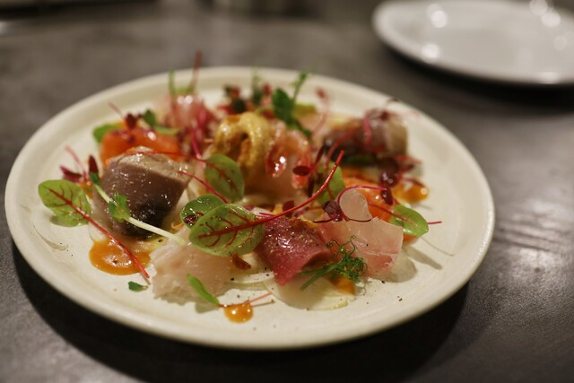
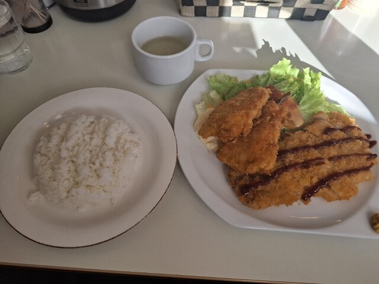

Photo Gallery
イタリアン POTIONとは
道産食材を使ったスモーク料理が評判の隠れ家イタリアン。鶴居のクラフトビールと相性抜群の料理が揃い、釧路で最も洗練された夜を演出。ワインのセレクションも豊富。赤横丁から移転リニューアルで話題。
📍 北海道釧路市川上町4丁目1 野口ビル2階 営業時間：18:00〜23:00（金土〜23:30、日14:00〜19:30） 定休日：水曜
実食レビュー
道産食材とイタリアンの融合
道東の食材を生かしたスモーク料理とイタリアンの手法を組み合わせた独自のスタイルが釧路では唯一無二の存在。鶴居村のクラフトビールや厳選ワインとのペアリングが素晴らしい。
13席のカウンターと個室という小さな空間ながら、シェフのライブ感を楽しめるスタイルが人気。記念日・特別な夜のディナーとして最適。予約必須。
おすすめメニュー
- シェフのスモーク料理……道産食材を独自スモークで仕上げたシグネチャー
- 鶴居クラフトビールとのペアリング……道東の地ビールと料理の絶妙なハーモニー
- 前菜盛合せ……道東の旬素材を活かした本日のアンティパスト
- おまかせコース……シェフにお任せで釧路食材の魅力を堪能
最新の営業時間・メニューは公式情報をご確認ください。
アクセス・予約
訪問のコツ
- 予約必須。少人数でのディナーに最適
- シェフのおまかせコースは値段が変動することがあるため確認を
- 特別な記念日・接待利用に最適な大人の隠れ家